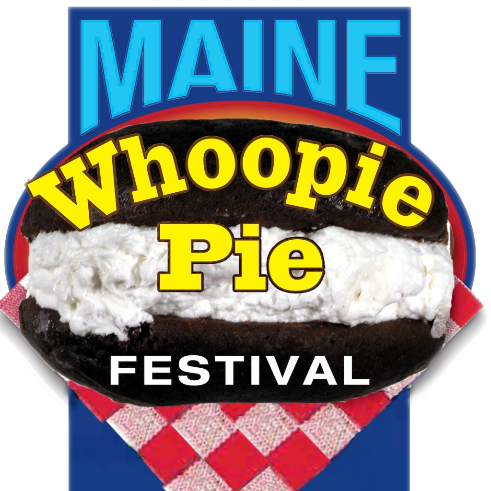

Lobsters!
Maine is famous for its lobsters. The lobsters come from the cold and clean waters off the coast of Maine in the northeastern United States. This region is part of the broader Gulf of Maine, which is known for its rich marine biodiversity.
Lobster Festival
The 77th Maine lobster festival will take place from to at Rockland’s Harbor Park.
Blueberries
The wild blueberry, sometimes called the low-bush blueberry, is native to Maine and thrives in its glacier-churned soil and challenging seasons. These hardy little berries are generally smaller than their high-bush cousins and, say their advocates, are juicier and more flavorful as well. Among the wild blueberry’s benefits for health and nutrition are that they’re packed with natural anti-oxidants. Maine is the United States’ largest producer of wild blueberries. Every year, beginning in late July and early August, crews head to the fields and barrens to carefully rake ‘em up.
(hover over the picture for effects)
Whoopie Pies
Maine whoopie pies are a beloved treat throughout New England, featuring two soft, cake-like cookies with a fluffy, marshmallow-based filling sandwiched between them. Often considered Maine's official state treat, these delicious desserts come in a variety of flavors, although the classic chocolate with vanilla filling remains the most popular.

Whoopie Pie Festival
Join us in Dover-Foxcroft on June 22nd, 2024 Rain or Shine For the Sweetest Day in Maine!!
